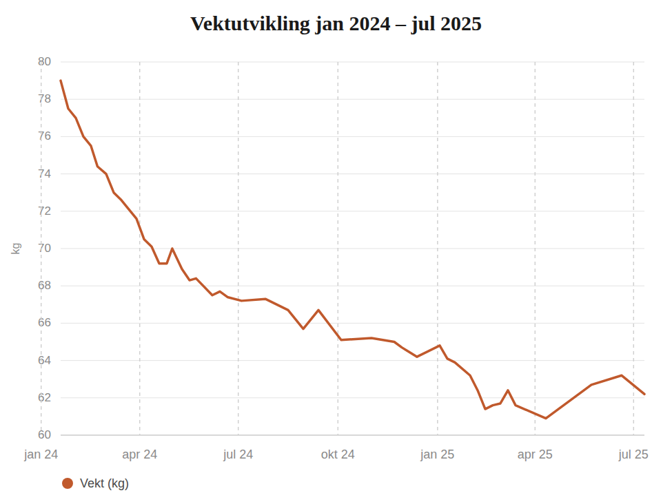

Min historie
Hvorfor jeg ble helseveileder
Jeg nærmet meg 50 år, og satt med kroppen full av spørsmål og ingen svar. Psoriasis, lichen planus, søvnproblemer, gjentatte betennelser i kroppen som springfinger (stenoserende tenosynovitt), episoder som krevde spesialistbehandling, og en økende følelse av at dette bare var starten på flere helseplager med årene. Jeg husker jeg tenkte: er det sånn det skal bli nå, bare flere og flere helseplager for hvert år som går?
Det var disse helseplagene, ikke vekten, som fikk meg til å legge om til et ketogent/lavkarbo kosthold. Jeg var desperat etter å ha det bedre i kroppen min. At jeg samtidig skulle gå ned så mye i vekt, og at kroppen etter hvert fant sin egen naturlige og stabile vekt, ble en stor bonus underveis, ikke målet i seg selv.
Den erfaringen er grunnen til at jeg i dag ønsker å jobbe som helseveileder. Jeg har ikke bare lest meg til hvordan kosthold og livsstil påvirker kronisk betennelse og autoimmune tilstander, jeg har levd det, målt det, og fulgt det tett over halvannet år.
Tallene

Vektutvikling, januar 2024 til juli 2025 (ukentlig veiing)
Da jeg startet 22. januar 2024, veide jeg mellom 80–82 kg. Jeg fulgte kostholdsplanen strengt de første 16 ukene og veide meg hver lørdag for å ha et ærlig bilde av utviklingen.
Totalt en nedgang på rundt 18–20 kg over halvannet år. Men det viktigste tallet var ikke vekten, det var hvor mye bedre jeg begynte å kjenne meg i kroppen.
Bonusen jeg ikke ventet
Noe jeg ikke hadde forventet: da jeg fikk mer energi av det nye kostholdet, fikk jeg også lyst til å bevege meg. Ikke fordi jeg tvang meg selv, men fordi jeg kjente at det var godt for kroppen. Det som før føltes tungt, ble enklere og mer lystbetont.
Livet skjer fortsatt, på godt og vondt, men jeg møter det med mye mer overskudd. Jeg ser en fremtid med muligheter foran meg, i stedet for bekymring for hva neste helseplage skulle bli.
Derfor
Jeg vet hvor tungt det kan være i starten, og hvor viktig det er å ha noen som har stått i det samme. Jeg vet hvordan det er å stå i matbutikken med en handleliste og ikke vite hvor man skal begynne. Som helseveileder bruker jeg denne erfaringen til å møte deg der du er.
Er du i 30- eller 40-årene, og kjenner deg igjen i tanken om at det bare blir flere helseplager med årene? Jeg var nesten 50 da jeg tenkte akkurat det samme. Sannheten er at livet er fullt av muligheter, uansett hvor i livet du står. Du kan velge å stoppe opp, og velge din egen vei videre. Det er mulig.
Jeg vil så gjerne hjelpe andre til å finne igjen styrken sin, og finne sin egen riktige vei videre. For jeg er selv beviset på at det er mulig, uansett alder.
Jeg er selv beviset på at det er mulig, uansett alder.